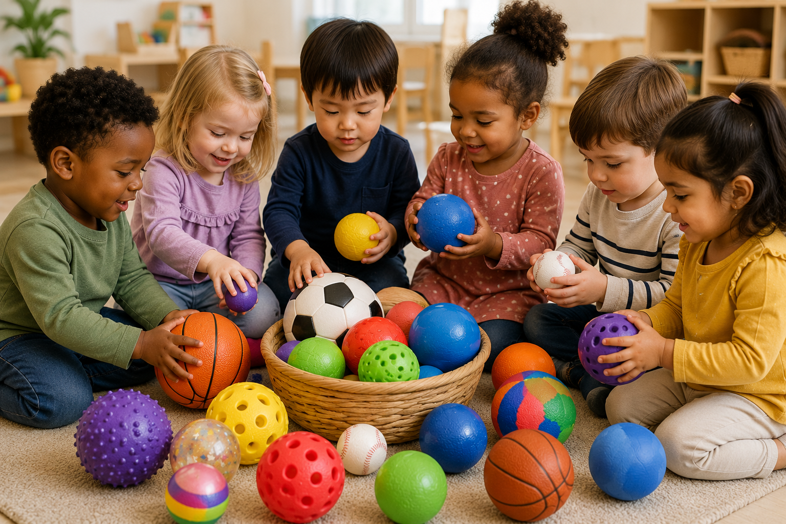
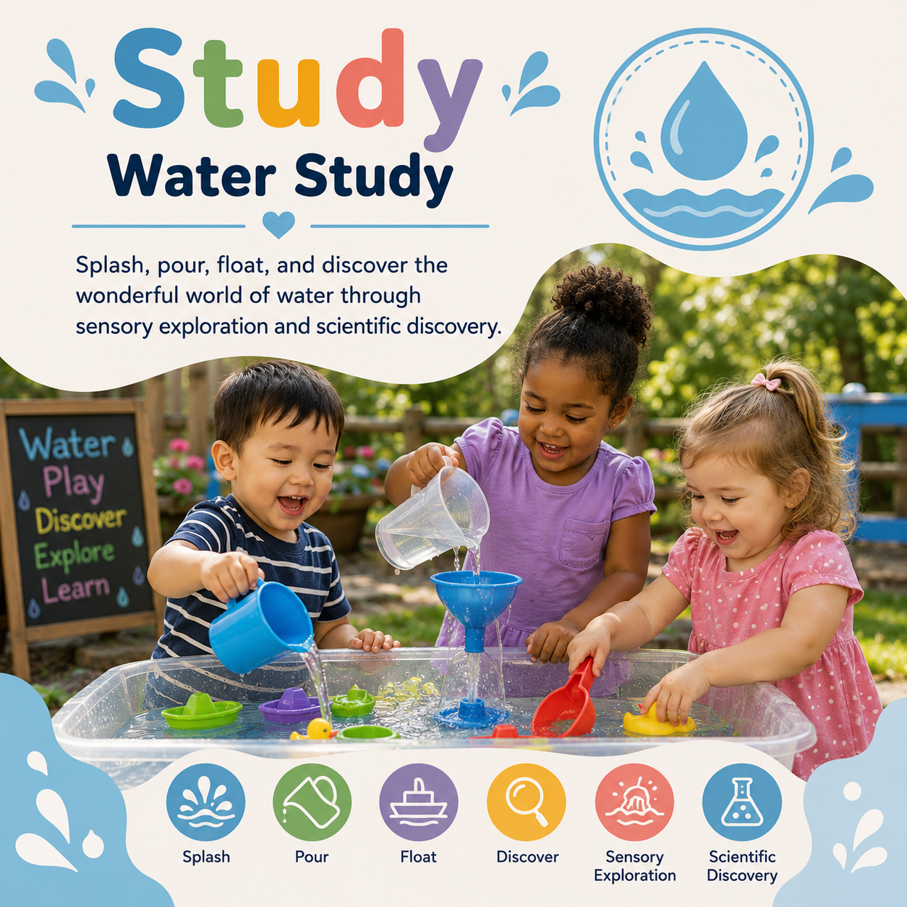

Monday
Meet the Balls
Observe, touch, compare, sort, and discuss different types of balls.
Children naturally love to roll, bounce, throw, catch, compare, predict, and investigate balls. This study transforms that excitement into meaningful learning experiences across science, mathematics, literacy, engineering, art, movement, and social emotional development.

Balls are one of the most versatile classroom materials. They encourage investigation, experimentation, cooperation, problem solving, measurement, prediction, and joyful movement while strengthening every developmental domain.
Activities
Learning Centers
STEM Challenges
Printable Resources
Encourage curiosity before introducing activities.
Children develop critical thinking, communication, and problem solving skills while exploring a variety of balls through hands on investigations.
Observe, compare, predict, investigate, classify, and solve simple problems using balls of different sizes, textures, and materials.
Describe observations, ask questions, learn new vocabulary, and communicate ideas during investigations.
Strengthen balance, coordination, throwing, catching, kicking, rolling, and fine motor control.
Practice teamwork, taking turns, cooperation, encouragement, and self confidence.
Introduce rich language naturally throughout the study.
Move along a surface.
Move back after hitting the ground.
Compare size, height, distance, or weight.
Guess what might happen before testing.
Find similarities and differences.
Fill with air.
Has more weight.
Has less weight.
Gather a variety of materials that encourage exploration and investigation.
Soccer balls, tennis balls, foam balls, beach balls, golf balls, yarn balls, and ping pong balls.
Cardboard tubes, wooden boards, gutters, or recycled boxes for rolling experiments.
Rulers, tape measures, scales, and nonstandard measuring tools.
Buckets, baskets, hoops, cones, and bins for sorting and movement activities.
A complete week of inquiry based learning centered around balls.
Observe, touch, compare, sort, and discuss different types of balls.
Build ramps and predict which balls roll the fastest and farthest.
Test different surfaces to discover which balls bounce the highest.
Compare circumference, height, distance, and weight using classroom tools.
Celebrate learning with obstacle courses, relay races, target games, and cooperative challenges.
Children become scientists as they ask questions, make predictions, test ideas, and observe what happens.
Test different objects to discover which ones roll and why.
Compare how different balls bounce on carpet, grass, tile, wood, and concrete.
Explore how changing the height of a ramp changes speed and distance.
Predict which balls float and which sink before testing them in water.
Hands on math becomes exciting when children use real objects to count, compare, measure, and graph.
Count, sort, and match balls by color, size, and type.
Graph favorite balls and compare classroom results.
Measure how far each ball rolls using rulers or nonstandard units.
Discover which balls are heavier or lighter using classroom scales.
Arrange balls from smallest to largest.
Roll balls toward numbered targets and add the points together.
Develop language and early literacy skills through books, conversations, and storytelling.
Read books about sports, playgrounds, movement, and different kinds of balls.
Draw observations and dictate predictions before each investigation.
Which ball rolls the fastest? Which ball bounces the highest? Why do you think that happened?
Use balls as tools for creating colorful works of art.
Roll paint covered balls across paper inside trays to create unique designs.
Trace balls of different sizes to create colorful overlapping circles.
Paint golf balls, tennis balls, and textured balls to compare the patterns they leave behind.
Create a giant mural using colorful circles cut from construction paper.
Build coordination, rhythm, listening skills, and teamwork through active movement experiences.
Children roll balls while music plays. When the music stops, everyone freezes with their ball.
Bounce balls to match slow, medium, and fast rhythms using classroom music.
Dance with scarves, beach balls, and balloons while following movement directions.
Design, build, improve, and test solutions using classroom materials.
Construct ramps with cardboard and books to test rolling speed.
Design tunnels using recycled boxes for balls to travel through.
Design targets that make rolling accuracy more difficult.
Test, redesign, and improve ramps after each investigation.
Strengthen little hands while developing coordination and control.
Use tweezers, tongs, or spoons to move pom poms and ping pong balls.
Roll play dough into different sized balls while strengthening finger muscles.
Use marbles and paint to create colorful process art.
Sort balls into cups by color, size, texture, or material.
Encourage healthy movement while building balance, strength, and coordination.
Aim and throw balls into baskets at different distances.
Kick balls through cones and around simple obstacle courses.
Work together while carrying, rolling, or balancing balls.
Roll balls to knock down recycled bottle pins.
Bring imagination into movement by creating exciting pretend play opportunities.
Turn the dramatic play center into a gymnasium with jerseys, scoreboards, whistles, and different sports balls.
Children become customers and store employees while comparing and purchasing equipment.
Take turns being the coach, referee, and players while encouraging teammates.
Encourage children to think like scientists and engineers by asking questions, testing ideas, and improving their designs.
Build different ramps and discover which design helps a ball roll the farthest.
Test different balls to see which one bounces the highest on different surfaces.
Create a maze using blocks, cardboard, or recycled materials and guide a ball from start to finish.
Design a target game and improve it after each round using observations and teamwork.
Movement games naturally encourage cooperation, perseverance, communication, and confidence.
Practice patience and respect while waiting for opportunities to participate.
Celebrate classmates' efforts and successes while building positive relationships.
Children gain confidence as they master new physical and problem solving skills.
Work together to solve challenges, build courses, and complete cooperative games.
Extend learning with engaging stories about movement, sports, and play.
A humorous story that encourages problem solving and observation.
A delightful story about friendship, cooperation, and playing together.
A simple picture book that celebrates play, imagination, and persistence.
Encourage families to continue learning through active play at home.
Look for different kinds of balls while walking through your neighborhood or visiting a park.
Play simple tossing, rolling, or bowling games together using household items.
Compare the sizes of balls around your home and discuss their differences.
Visit your local library and explore books about sports, movement, and teamwork.
Ready to use classroom resources designed to complement the Balls Study.
Sort by color, size, texture, and type.
Compare rolling distance, bounce height, and ball size.
Introduce new words through colorful classroom visuals.
Discover more curriculum studies that build on movement, science, and engineering.

Investigate pouring, floating, melting, and measuring.

Design, build, and test structures using classroom materials.

Explore leaves, bark, habitats, seasons, and outdoor discovery.